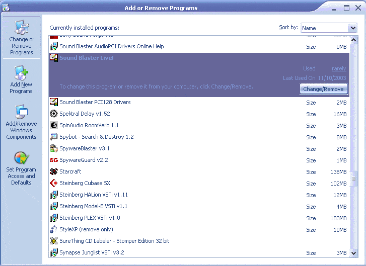
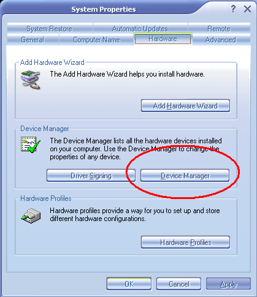
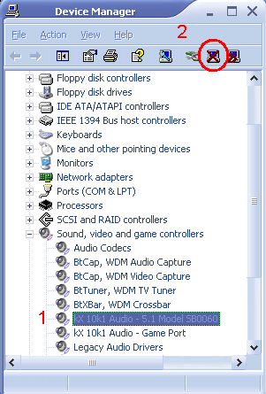
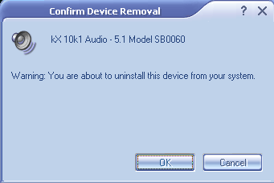

This part of the guide will show you how to uninstall the original Soundblaster drivers that came with you soundcard.
Note: This guide was based on Windows XP with a custom theme, so don't be alarmed if things look strange.
Before removing the Creative Drivers, we need to remove all the junk programs that are installed with them.
Go to the control panel and
open up the Add or Remove Programs contro lpanel

Find the entry relating to the Sound Blaster Live! or Audigy 1/2 Software,
click "Change/Remove" and follow the instructions to uninstall. You may need
to reboot your computer after this process.
These instructions show the kX driver already installed, but the process is the same for most hardware.
Open the control panel and open the System Control Panel
Click the "Hardware" tab.

Click the "Device Manager" Tab
Users of previous Windows Versions simply click the "Device Manager" tab.

Select the Soundblaster card(1) and select Uninstall(2)

A confirmation windows will appear, click OK, and close the Device Manager.
When prompted to restart, click "OK" to restart immediately, and "Cancel" to restart in your own time.
Once you have restarted, a popup window may appear stating that new hardware was found. If prompted to install anything click "Cancel."
If there are conflicts and errors occuring after installing the kX Project Drivers, first try the Windows 2000/XP Setup Guide.
If you still have errors, try using the Driver Cleaner from
Driverheaven.net to remove all traces of the Creative drivers.